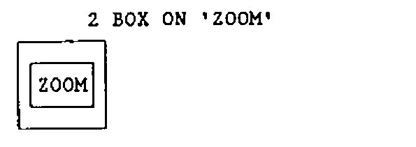
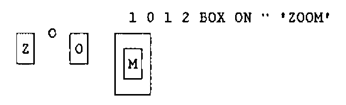
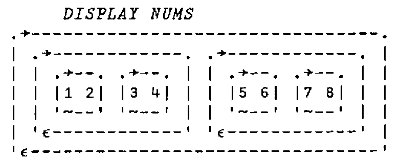
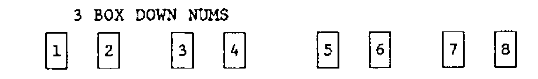
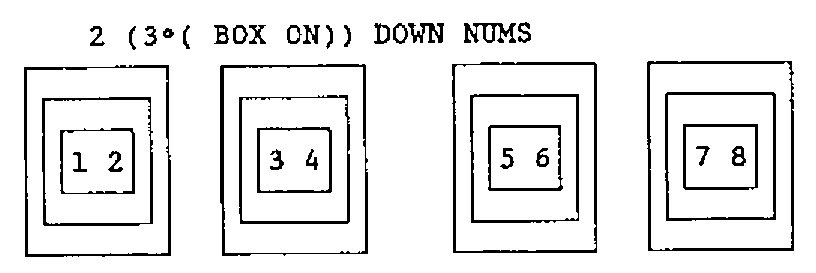
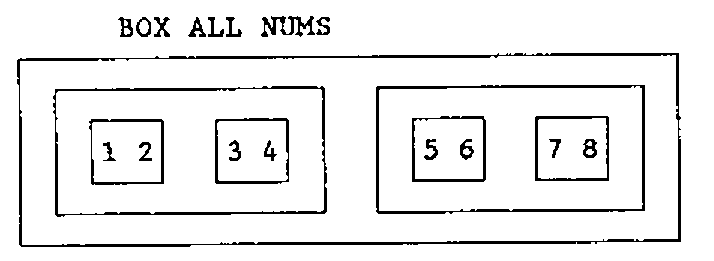
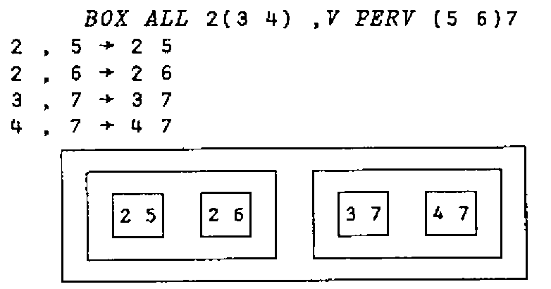

Workshop on Defined Operators
Vector 6:4, page 64
Transcribed from the printed issue; not yet reviewed. Read it in the PDF of the issue, page 64
The following text is a ‘hard copy’ of one of the sessions which took place at the British APL Association workshop on ‘User Defined Operators’. The functions and operators shown here are certainly not all original, and many are perhaps more interesting than useful. However some of them may provide food for thought.
First, an operator which is useful when writing function expressions such as +.× or +.×/ as it shows you what’s going on during the evaluation.
⎕OR is a function in Dyalog APL in the ⎕CR, ⎕VR, … mould which gives a sketch of the named function.
2 +V 3
2 + 3 → 5
5
+V/⍳4
3 + 4 → 7
2 + 7 → 9
1 + 9 → 10
10
3 4 (+V).(×V) 10 20
4 × 20 → 80
3 × 10 → 30
30 + 80 → 110
110
if your APL doesn’t have ⎕OR, you can still get a good idea of the execution of the function by replacing the first line with:
in which case you would see:
you may also like to make the V operator ambivalent so you can trace the execution of monadic functions.
In the examples which follow, we will use the primitive ‘compose’ operator ‘∘’. Compose can be used to glue an argument to a dyadic function to produce a new monadic function. For example:
*∘0.5 is the monadic square root function;
1∘○ is the trig function ‘sin’.
ON is an operator which applies its (function) operand repeatedly to the argument.
… so the following function (verbosely) doubles its argument 4 times:
… or using a function which draws a little box around its argument:


Note that ON with a boolean left argument gives us conditional function application, a sort of ‘if’ construct. For example, the following expression draws a box around the matrix only if it is non-null:
Likewise, the ELSE operator conditionally applies either its left or right function operand:
… the following trivial example shows its use:
Now we have ELSE, we can use it to define DOWN which applies its function with D each’s or D levels down from the top of the nested array:
which says: If D is zero, apply FN directly (with zero each’s) to Z, otherwise apply it at depth D-1 to each subarray. Note that the string
… forms a single derived function in exactly the same way that +.× forms the derived function for inner product.
So, if NUMS is a Vector-of-Vectors-of-Vectors of numbers.

then ..

Now, combining DOWN with ON you can say:
Go down 2 levels and there draw 3 little boxes:

Interestingly, this gives the same result as if you said:
… or: 3 times in a row, go down 2 levels and there draw a box.
Just as the ELSE operator provides a counterpart to procedural languages’ if .. then .. else construct, the following rather opaque OF operator gives us an equivalent to the CASE statement.
∇ Z←{D}(N OF FN)Z ⍝ Z←N OF FN1 OF FN2 OF FN3 ... Z.
[1] →(3=⎕NC'N')↓2 ⋄ N Z←(⎕EX'N')N Z ⍝ LEFT DN TREE WHILE N IS FN.
[2] →(⎕IO=N)↓3 ⋄ Z←FN Z ⍝ APPLY FN IF N'TH FROM LEFT OF TREE.
[3] →(⎕NC'D')↓0 ⋄ Z←(N-1)Z ⍝ PREFIX POSN FROM LEFT IF NOT TOP.
∇
so we can write …
… apply the 2nd function (÷) to the argument. Similarly:
an out of range case just returns the argument unchanged.
we can use OF to write LEAVES which applies its function operand to subarrays of depth D. It’s a sort of opposite to the DOWN operator.
∇ Z←(D LEAVES FN)Z ⍝ APPLY FN TO LEAVES OF DEPTH D.
[1] Z←(⎕IO+1+×D-|≡Z) OF (D LEAVES FN¨) OF FN Z
∇
This says return:
In the case (
Dis less than the depth ofZ),
… the application ofD LEAVES FNto each subarray ofZ.
In the case (Dis equal to the depth ofZ)
… the application ofFNtoZ
In the default case (Dis greater than the depth ofZ)
… justZ.
To complement DOWN and LEAVES, we have ALL:
which applies its operand to all levels of the array from a simple (depth 1) array upwards.

Finally, we can write an operator to do the ‘pervasion’ which we normally associate with the scalar primitive functions.
… if A and B are both depth 0, apply FN between them, otherwise, apply it pervasively between each subarray …

Editor’s Note: this text came as a nested vector in a Dyalog APL workspace. I believe I have dug it out correctly, but I gave up on the little boxy bits, which have been cut out from John’s original and stuck in!